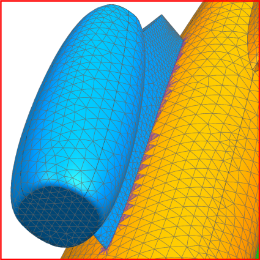
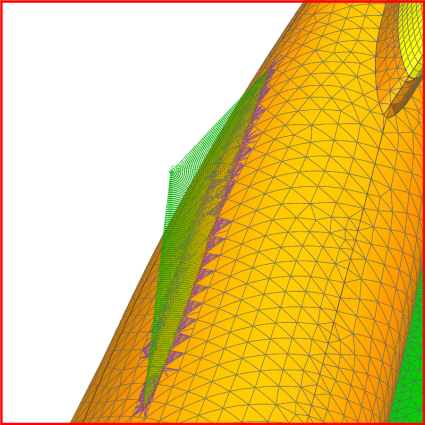

If there is a one-to-one correspondence between boundary nodes in the superelement and nodes in the base FEM, the superelement inherits the connection used in the assembly FEM.
As a best practice, you should always use Assembly Label Manager to resolve node, element, and coordinate system label conflicts whenever you modify an assembly FEM.
|

|
|

|
In some cases, the boundary nodes in the superelement may not correspond to nodes in the base FEM. You must then manually connect the superelement to the residual using a node-to-node connection.